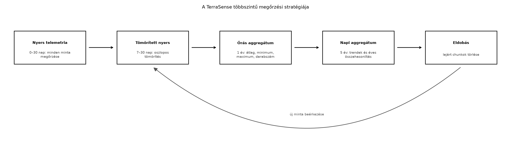
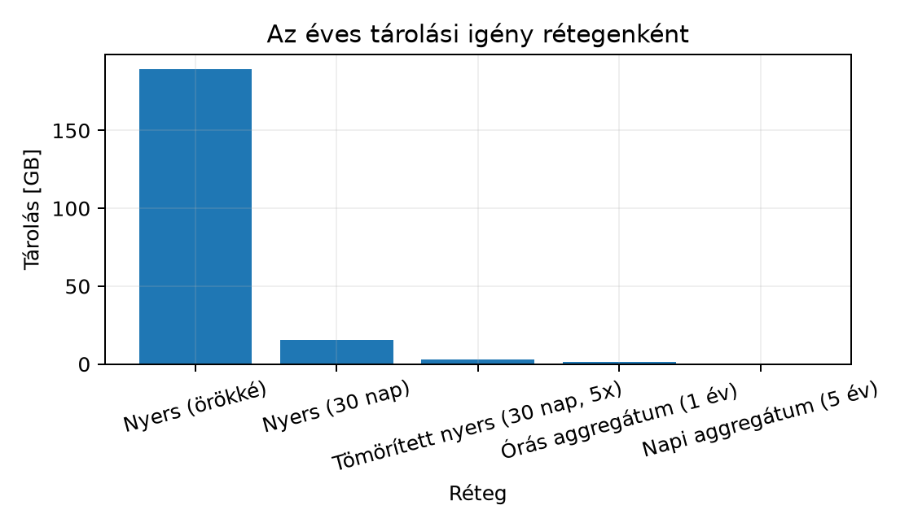

Az IoT-rendszer adatai folyamatosan, monoton módon keletkeznek: a TerraSense telemetriája másodpercenként vagy percenként érkezik, és soha nem „fogy el”. Ha minden nyers mintát korlátlan ideig tárolunk, a tárolási költség hamar meghaladja a rendszer értékét. Ugyanakkor a nyers adatok rövid távon fontosak a hibakereséshez, a hosszú távú trendekhez pedig elegendő az aggregált forma. Ebben az alfejezetben megtervezzük a TerraSense többszintű megőrzési stratégiáját, és bemutatjuk, hogyan automatizálja ezt TimescaleDB-ben a megőrzési házirend, a folyamatos aggregátum és a tömörítés.
Tegyük fel, hogy a TerraSense üvegház-telepén 1000
ts-node működik, mindegyik 1 percenként küld egy
telemetria-üzenetet három méréssel: hőmérséklet, relatív páratartalom és
talajnedvesség. A ts-backend ezt a idempotens ingest után az idősoros adatbázisba írja. A 15.2-ben bevezetett
hosszú táblában egy üzenet három mérési sort eredményez, így egy év
alatt több mint másfél milliárd mérési sor keletkezik. Ha a nyers
sorokat örökké tartjuk, a tárolási költség lineárisan nő, és a
lekérdezések is lassulnak. A megoldás nem az adat eldobása, hanem az
adattömörítés időben és tömörítési formában: a régi
nyers adatot rövid megőrzés után tömörítjük, majd később aggregált
formába sűrítjük.
Definíció (megőrzési stratégia, retention strategy). Az idősoros adatbázisban előírt szabályrendszer, amely meghatározza, hogy az egyes adatfelbontások (nyers, órás, napi) mennyi ideig őrződnek meg, és mi történik a lejárt adatokkal (eldobás, archiválás, további aggregálás).
Definíció (chunk és megőrzési házirend). A
TimescaleDB a hypertable-t belső, időben partícionált darabokra,
úgynevezett chunkokra bontja. A
retention_policy drop_chunks művelete a lejárt
intervallumú chunkokat törli. Ez a törlés fájlszintű, ezért gyors, és
nem igényel soronkénti DELETE-et.
Definíció (folyamatos aggregátum, continuous
aggregate). A TimescaleDB materializált nézete, amelyet a
rendszer automatikusan, inkrementálisan frissít az új nyers adatok
beérkezésekor. A felhasználó úgy kérdezheti le, mint egy normál nézetet,
de a mögöttes aggregált tárolás miatt sokkal gyorsabb, mint a nyers
adatokból való mindenkori GROUP BY.
Definíció (tömörítés, compression). A TimescaleDB oszlopos, deduplikáló tömörítése, amely a chunkok tárolási méretét gyakran 5–15-szörösére csökkenti. A tömörített chunkok olvashatók, de írni nem lehet őket.
A megőrzési stratégia rétegei a TerraSense számára:
Ezt a rétegződést mutatja az alábbi folyamatábra:

A folyamatábra leírása: minden beérkező nyers minta először a 30 napos nyers rétegbe kerül. A 7. nap után a nyers chunk tömörödik, de továbbra is lekérdezhető. Az órás aggregátum folyamatosan frissül, és 1 évig őrzi a köztes statisztikákat. A napi aggregátum 5 évig ad hosszú távú trendet, például a Grafana-dashboardhoz. A lejárt chunkok törlődnek.
| Kérdés | Lehetőségek | TerraSense-döntés | Indoklás |
|---|---|---|---|
| Nyers adat megőrzési ideje | 7 nap, 30 nap, 1 év | 30 nap | Hibakereséshez elegendő, de nem növeli túlzottan a tárolást |
| Aggregátumok időablaka | 1 óra, 1 nap | mindkettő | Az órás a rövid távú riasztáshoz, a napi a hosszú távú trendhez |
| Aggregátum megőrzési ideje | 1 év, 5 év, korlátlan | 1 év (órás), 5 év (napi) | Jogi és üzleti trendek, de a tárolási költség kontroll alatt |
| Tömörítés engedélyezése | nincs, csak nyers, minden réteg | nyers 7 nap után, aggregátumok később | A tömörített chunk csak olvasható, ezért ne tömörítsünk túl korán |
| Időbélyeg típusa | timestamptz, timestamp |
timestamptz |
UTC, időzóna-helyes; epoch ms a kódban, az adatbázisban
timestamptz |
| Későn érkező adat kezelése | eldobás, LOCF, visszamenőleges refresh | visszamenőleges refresh 8/9 napos ablakkal | A gateway legfeljebb 7 napot pufferel offline; az ennél régebbi adat csak külön eljárással korrigálható |
Számítsuk ki az 1000 csomópontos TerraSense flotta éves nyers adatmennyiségét a 15.2-ben bevezetett hosszú táblában. A telemetria-üzenetek 1 percenként érkeznek, és üzenetenként három mérés van, tehát a mérési sorok száma:
Feltételezzük, hogy egy mérési sor a hosszú táblában a
ts (8 B), site (4 B), node_id (8
B), seq (8 B), boot_id (8 B),
measurement_type (átlagosan 12 B), value (8
B), unit (4 B) és a sorindex overhead (kb. 60 B) miatt
összesen körülbelül 120 B helyet foglal. Az éves nyers tárolási
igény:
A 30 napos megőrzéssel a nyers réteg csak az év 30/365 részét tartja:
Az órás aggregátum 1 évig csomópontonként és méréstípusonként 8 760 sort tartalmaz, azaz sort, soronként kb. 60 B, összesen 1,58 GB. A napi aggregátum 5 évre sort tartalmaz, szintén kb. 60 B/sor mellett 0,33 GB. A tömörítés a TimescaleDB-ben jellemzően 5–10-szeres csökkentést ad (illusztratív, a konkrét mérés az adatok redundanciájától függ). Ha csak a nyers tömörített 30 napos rétegét nézzük, a 15,55 GB 5-szörös tömörítéssel 3,11 GB-ra csökken.

A diagram leírása: a nyers adat korlátlan ideig tartása 189,2 GB-ot igényelne évente. A 30 napos megőrzés ezt 15,55 GB-ra csökkenti, a tömörítés pedig 3,11 GB-ra. Az órás és napi aggregátumok hosszabb megőrzési idejük ellenére elhanyagolható méretűek. A számítás a mérési sorokkal dolgozik, nem az MQTT-üzenetekkel: egy üzenet a hosszú táblában három sor.
Munkakönyvtár:
mkdir -p ~/iot-labor/i046 && cd ~/iot-labor/i046Előfeltétel: a Idősoros
adatbázisok és adatmodellezés laborjában létrehozott
terrasense adatbázis, telemetry hypertable és
telemetry_ingest eseménytábla. A közös stackben az
adatbázis szolgáltatásneve lab-timescaledb, a felhasználó
terra, az adatbázis terrasense; ezeket a 15.2
laborban már egységesen beállítottuk. Nem hozunk létre új
ts-timescaledb konténert és nem használunk ts
felhasználót.
Hozzunk létre egy SQL scriptet:
-- ~/iot-labor/i046/01_retention_aggregates.sql
-- Feltételezi: telemetry hypertable és telemetry_ingest létezik (lásd i045 labor)
-- 1) Folyamatos órás aggregátum a hosszú táblából
CREATE MATERIALIZED VIEW telemetry_hourly
WITH (timescaledb.continuous) AS
SELECT
time_bucket('1 hour', ts) AS bucket,
site,
node_id,
measurement_type,
avg(value) AS avg_value,
min(value) AS min_value,
max(value) AS max_value,
count(*) AS sample_count
FROM telemetry
WHERE valid = true
GROUP BY time_bucket('1 hour', ts), site, node_id, measurement_type;
-- 2) Folyamatos napi aggregátum az órásból, mintaszám szerint súlyozott átlaggal
CREATE MATERIALIZED VIEW telemetry_daily
WITH (timescaledb.continuous) AS
SELECT
time_bucket('1 day', bucket) AS bucket,
site,
node_id,
measurement_type,
sum(avg_value * sample_count) / nullif(sum(sample_count), 0) AS avg_value,
min(min_value) AS min_value,
max(max_value) AS max_value,
sum(sample_count) AS sample_count
FROM telemetry_hourly
GROUP BY time_bucket('1 day', bucket), site, node_id, measurement_type;
-- 3) Induló backfill: a már meglévő nyers adatokból feltöltjük a nézeteket
CALL refresh_continuous_aggregate('telemetry_hourly', NULL, NULL);
CALL refresh_continuous_aggregate('telemetry_daily', NULL, NULL);
-- 4) Nyers adat tömörítése 7 nap után, szegmentálás site/node/méréstípus szerint
ALTER TABLE telemetry SET (
timescaledb.compress,
timescaledb.compress_segmentby = 'site, node_id, measurement_type',
timescaledb.compress_orderby = 'ts DESC'
);
SELECT add_compression_policy('telemetry', INTERVAL '7 days');
-- 5) Nyers adat megőrzése: 30 nap után chunkok eldobása
SELECT add_retention_policy('telemetry', INTERVAL '30 days');
-- 6) Folyamatos aggregátumok megőrzése
SELECT add_retention_policy('telemetry_hourly', INTERVAL '1 year');
SELECT add_retention_policy('telemetry_daily', INTERVAL '5 years');
-- 7) Folyamatos aggregátumok automatikus frissítése
-- A 7 napos offline puffereléshez illeszkedő 8/9 napos visszamenőleges ablak.
SELECT add_continuous_aggregate_policy('telemetry_hourly',
start_offset => INTERVAL '8 days',
end_offset => INTERVAL '1 hour',
schedule_interval => INTERVAL '1 hour');
SELECT add_continuous_aggregate_policy('telemetry_daily',
start_offset => INTERVAL '9 days',
end_offset => INTERVAL '1 hour',
schedule_interval => INTERVAL '1 hour');
-- 8) Opcionális: az órás aggregátum tömörítése 90 nap után
-- ALTER MATERIALIZED VIEW telemetry_hourly SET (
-- timescaledb.compress,
-- timescaledb.compress_segmentby = 'site, node_id, measurement_type'
-- );
-- SELECT add_compression_policy('telemetry_hourly', INTERVAL '90 days');A script egy kezdeti labor-adatbázison fut, ezért a policy-k
létrehozása nem használ if_not_exists feltételt. Ha a
scriptet újra kell futtatni, előbb távolítsuk el a korábbi policy-ket,
vagy használjunk friss adatbázist. A folyamatos aggregátumok a hosszú
telemetry tábla
measurement_type/value modelljére épülnek:
nincs bennük temperature, humidity vagy
soil_moisture oszlop, hanem méréstípusonként külön sorok, a
Dashboardok Grafanával alfejezet által elvárt
bucket, site, node_id,
measurement_type, avg_value,
min_value, max_value,
sample_count oszlopokkal. Az aggregátumok csak az érvényes
méréseket (valid = true) számítják be, mert egy
szenzorhibát jelző, érvénytelen érték nem torzíthatja a dashboard
trendjét és a sample_count-ot.
A napi aggregátum átlaga nem az óránkénti átlagok egyszerű átlaga, hanem mintaszám szerint súlyozott:
Ez akkor is helyes, ha az egyes órákban eltérő számú minta érkezett. Ha például egy órában 1 minta van 0 °C-on, egy másikban 9 minta 10 °C-on, a helyes napi átlag , nem pedig az órás átlagok egyszerű átlaga, az 5,0. Az idővel súlyozott átlag ettől külön fogalom: az a minták időbeli eloszlását is figyelembe veszi, és a jelen labor nem azt számítja.
Futtatás a Compose szolgáltatásnevén és a terra
felhasználóval:
docker compose -f ~/iot-labor/stack/compose.yaml exec -T lab-timescaledb \
psql -U terra -d terrasense -v ON_ERROR_STOP=1 \
< ~/iot-labor/i046/01_retention_aggregates.sqlVárt kimenet: a SELECT parancsok visszaadják a
policy-azonosítókat, a CREATE MATERIALIZED VIEW nem ad
vissza sort, de létrehozza a nézetet. A lekérdezés:
SELECT * FROM timescaledb_information.jobs;
SELECT view_name, compression_enabled
FROM timescaledb_information.continuous_aggregates;Ellenőrzéshez szúrjunk be néhány hosszú formátumú teszt sort. A három különböző órában három méréstípus szerepel, ezért óránként három sor keletkezik:
INSERT INTO telemetry
(ts, site, node_id, seq, boot_id, schema_version,
measurement_type, value, unit, valid)
VALUES
(date_trunc('hour', now()) - interval '3 hours' + interval '5 minutes',
'gh1', 'n001', 101, 'boot-1', 1, 'temperature', 22.4, 'Cel', true),
(date_trunc('hour', now()) - interval '3 hours' + interval '5 minutes',
'gh1', 'n001', 101, 'boot-1', 1, 'humidity', 60.1, '%RH', true),
(date_trunc('hour', now()) - interval '3 hours' + interval '5 minutes',
'gh1', 'n001', 101, 'boot-1', 1, 'soil_moisture', 31.0, '%', true),
(date_trunc('hour', now()) - interval '2 hours' + interval '5 minutes',
'gh1', 'n001', 102, 'boot-1', 1, 'temperature', 22.8, 'Cel', true),
(date_trunc('hour', now()) - interval '2 hours' + interval '5 minutes',
'gh1', 'n001', 102, 'boot-1', 1, 'humidity', 59.4, '%RH', true),
(date_trunc('hour', now()) - interval '2 hours' + interval '5 minutes',
'gh1', 'n001', 102, 'boot-1', 1, 'soil_moisture', 30.8, '%', true),
(date_trunc('hour', now()) - interval '1 hour' + interval '5 minutes',
'gh1', 'n001', 103, 'boot-1', 1, 'temperature', 23.1, 'Cel', true),
(date_trunc('hour', now()) - interval '1 hour' + interval '5 minutes',
'gh1', 'n001', 103, 'boot-1', 1, 'humidity', 58.2, '%RH', true),
(date_trunc('hour', now()) - interval '1 hour' + interval '5 minutes',
'gh1', 'n001', 103, 'boot-1', 1, 'soil_moisture', 30.5, '%', true)
ON CONFLICT (site, node_id, boot_id, seq, measurement_type, ts) DO NOTHING;
CALL refresh_continuous_aggregate('telemetry_hourly', now() - interval '1 day', now());
SELECT * FROM telemetry_hourly
ORDER BY bucket DESC, measurement_type
LIMIT 9;Várt kimenet: három órás bucket, melyek mindegyikében három
méréstípus szerepel, méréstípusonként sample_count = 1. A
napi aggregátum manuális frissítése után hasonlóan lekérdezhető:
CALL refresh_continuous_aggregate('telemetry_daily', now() - interval '2 days', now());
SELECT * FROM telemetry_daily
ORDER BY bucket DESC, measurement_type
LIMIT 9;A sample_count méréstípusonként értendő; egy órás
bucketben a fenti tesztben három sor van, mérésenként egy-egy
mintával.
Induló backfill, későn visszatöltött adatok és a
retention–refresh sorrend. A fenti script a nézetek létrehozása
után NULL, NULL ablakkal végzi el az induló backfillt, hogy
a 15.2-ből megmaradt nyers adatok azonnal megjelenjenek az
aggregátumokban. Ez a művelet nagy adatmennyiségnél hosszú ideig
tarthat, ezért üzemeltetésben terhelésmentes időszakban kell futtatni. A
későn érkező adatok kezelésének lépései:
start_offset => INTERVAL '8 days', ami lefedi a 7 napos
maximális késést és a feldolgozási időt.start_offset => INTERVAL '9 days',
mert a napi bucket a teljes napot újraszámolja, és az órás nézet későbbi
korrekcióit is át kell vennie.end_offset => INTERVAL '1 hour' szándékosan
kihagyja a legutolsó, még nem teljes órát; a későn érkező adat a
következő órás frissítéskor, a 8 napos ablakon belül még bekerül.A 7 napnál régebbi, de 30 napnál fiatalabb minta visszatöltése a következőképpen ellenőrizhető. Szúrjunk be egy 7 nappal korábbi hőmérsékletet, majd futtassuk a két nézet frissítését:
INSERT INTO telemetry
(ts, site, node_id, seq, boot_id, schema_version,
measurement_type, value, unit, valid)
VALUES
(now() - interval '7 days', 'gh1', 'n001', 900, 'boot-1', 1,
'temperature', 21.0, 'Cel', true);
CALL refresh_continuous_aggregate('telemetry_hourly',
now() - interval '8 days', now());
CALL refresh_continuous_aggregate('telemetry_daily',
now() - interval '9 days', now());
SELECT bucket, avg_value, sample_count
FROM telemetry_hourly
WHERE site = 'gh1' AND node_id = 'n001'
AND measurement_type = 'temperature'
AND bucket >= date_trunc('hour', now() - interval '7 days')
AND bucket < date_trunc('hour', now() - interval '6 days')
ORDER BY bucket;A várt eredmény: a 7 nappal korábbi minta megjelenik az órás és a napi nézetben is. A visszamenőleges refresh csak a megadott ablakot számolja újra; a korábbi aggregátumok érintetlenek maradnak. Ezt úgy ellenőrizhetjük, hogy a frissítés előtt és után lementjük egy 10 napnál régebbi bucket értékét:
SELECT bucket, avg_value, sample_count
FROM telemetry_hourly
WHERE bucket < now() - interval '10 days'
ORDER BY bucket
LIMIT 5;A két lekérdezés eredményének azonosnak kell lennie. Ha egy 30 napnál régebbi minta visszatöltése szükséges, a nyers chunk már eldobásra kerülhetett; ilyenkor a minta csak archívumból, a retention policy ideiglenes felfüggesztésével tölthető vissza, és a 30 napnál régebbi, már eldobott nyers adatot a folyamatos aggregátum sem tudja visszamenőleg korrigálni. Ezért fontos, hogy a gateway offline puffere (7 nap) és a nyers megőrzés (30 nap) összhangban legyen.
Takarítás. A labor SQL scriptjét nem kell törölni; a
reprodukálhatóság miatt hagyjuk a ~/iot-labor/i046/
könyvtárban. A létrehozott policy-k és nézetek az terra
fejlesztői sémájában maradnak, mert a dashboard
használni fogja őket.
A működést a timescaledb_information.jobs táblában
látható jobokkal ellenőrizzük. A retention_policy jobok
futási ideje és a continuous_aggregate_policy frissítési
állapota itt látható. Tipikus hibatünetek:
| Tünet | Ok | Javítás |
|---|---|---|
drop_chunks nem törli a régi chunkokat |
A policy job még nem futott le, vagy a chunk tartalmaz a lejárati időnél újabb sort is | Futtassuk manuálisan: CALL run_job(policy_job_id); és
ellenőrizzük a drop_chunks intervallumot |
| A folyamatos aggregátum nem tartalmazza a legújabb adatokat | Az aggregátum frissítése a policy end_offset miatt
késik |
Csökkentsük az end_offset értékét, vagy hívjuk a
refresh_continuous_aggregate-et manuálisan |
A tömörített chunkra INSERT hibaüzenet |
A beillesztés a tömörítési intervallumnál régebbi időbélyeggel próbál írni | Helyesbítsük az időbélyeget, vagy ideiglenesen kapcsoljuk ki a tömörítést |
A CREATE MATERIALIZED VIEW a
telemetry_hourly-ra hivatkozó második aggregátumnál hibát
ad |
A folyamatos aggregátum láncolása csak bizonyos TimescaleDB verziókban támogatott | Készítsük a napi aggregátumot közvetlenül a nyers
telemetry táblából |
Az SQL column "temperature" does not exist hibát
ad |
A régi, széles táblára írt aggregátum-definíció maradt a scriptben | A 15.2 hosszú modelljében
measurement_type/value oszlopok vannak; a
nézetet a fenti módon kell definiálni |
| A napi átlag eltér a várt értéktől | Az órás átlagok egyszerű átlagát használjuk | sum(avg_value * sample_count) / sum(sample_count)
képlet kell |
| A 7 nappal korábbi adat nem jelenik meg | A refresh start_offset értéke 1 nap, vagy a kézi
refresh ablaka túl szűk |
Állítsuk 8/9 napra, és a kézi refreshnél is legalább 8/9 napos ablakot használjunk |
| Az aggregátum érvénytelen méréseket is beszámít | Hiányzik a WHERE valid = true szűrő a folyamatos
aggregátumból |
A hosszú tábla valid oszlopa szerint szűrjünk; az órás
és a közvetlen napi nézet is csak érvényes értéket aggregáljon |
A docker exec ts-timescaledb konténert
keres |
A 15.2-ben a szolgáltatás neve lab-timescaledb |
docker compose -f ~/iot-labor/stack/compose.yaml exec -T lab-timescaledb ... |
retention_policy intervalluma
rövidebb, mint a compression_policy kezdete, a régi nyers
chunkok tömörítetlenül elvesznek. Az általunk beállított 7 napos
tömörítés és 30 napos megőrzés biztosítja, hogy minden adat legalább 7
napig nyersen, utána 23 napig tömörítve elérhető.CREATE MATERIALIZED VIEW WITH (timescaledb.continuous) csak
a nézetet hozza létre; az automatikus frissítéshez külön
add_continuous_aggregate_policy szükséges. A hiánya miatt
az aggregátum adatai elavulnak, és a dashboard hibás trendeket
mutat.timestamptz figyelmen kívül
hagyása. Ha a tábla oszlopa timestamp (time zone
nélkül), a különböző időzónájú eszközök időbélyegei keverednek. A
TerraSense-ben minden ts érték epoch ms, és a backend
timestamptz oszlopba írja UTC-ben.start_offset mellett a 7 nappal később érkező minta már nem
kerül be az aggregátumba. A 8/9 napos ablak ezt lefedi, és összhangban
van a 30 napos nyers megőrzéssel.Miért nem elegendő egyetlen, nagy felbontású nyers adatréteg 5 évre, ha a TimescaleDB tömörítés mellett is kezelhető a mérete?
Egy másik TerraSense-telep 5000 csomópontot üzemeltet, a mintavételi intervallum 30 másodperc, és minden üzenet három mérést tartalmaz. Egy mérési sor becsült tárolási igénye 90 B. Számítsa ki az éves nyers adatmennyiséget GB-ban, majd a 30 napos megőrzés, 5-szörös tömörítés és 1 éves órás aggregátum (60 B/sor) melletti teljes tárigényt.
Készítsen SQL scriptet a labor bővítésére: hozzon létre napi
aggregátumot közvetlenül a telemetry táblából, és állítson
be rá 5 éves megőrzést. A script mentése:
~/iot-labor/i046/02_daily_direct.sql.
A telemetry_hourly folyamatos aggregátum a frissítési
policy beállítása után sem tartalmazza a legutóbbi 45 perc adatait. Mi
lehet az ok, és hogyan javítaná?
Bár a tömörítés csökkenti a tárolási méretet, a nyers adatok lekérdezése akkor is lassú, ha több milliárd sort kell átvizsgálni. A hosszú távú trendekhez, például az éves hőmérséklet-összehasonlításhoz az előre kiszámított napi aggregátum sokkal hatékonyabb. Emellett a jogi adatvédelmi követelmények (például a GDPR adatminimalizálási elve) is a felesleges nyers adatok korlátozott idejű tárolását írják elő. Az aggregátumok a nyers adatoktól függetlenül is megőrizhetők, mert kevesebb személyes vagy szenzitív részletet tartalmaznak.
A mérési sorok száma évente:
Éves nyers méret:
30 napos nyers réteg:
5-szörös tömörítéssel:
Az órás aggregátum 1 évre sor, soronként 60 B:
Teljes tárterület: . Ez jól mutatja, hogy a tömörített nyers plusz aggregátum kombináció drasztikusan csökkenti az éves tárigényt a korlátlan nyers tároláshoz () képest.
~/iot-labor/i046/02_daily_direct.sql:
-- Közvetlen napi aggregátum a nyers telemetry táblából, hosszú formátumban
CREATE MATERIALIZED VIEW telemetry_daily_direct
WITH (timescaledb.continuous) AS
SELECT
time_bucket('1 day', ts) AS bucket,
site,
node_id,
measurement_type,
avg(value) AS avg_value,
min(value) AS min_value,
max(value) AS max_value,
count(*) AS sample_count
FROM telemetry
WHERE valid = true
GROUP BY time_bucket('1 day', ts), site, node_id, measurement_type;
SELECT add_retention_policy('telemetry_daily_direct', INTERVAL '5 years');
SELECT add_continuous_aggregate_policy('telemetry_daily_direct',
start_offset => INTERVAL '9 days',
end_offset => INTERVAL '1 hour',
schedule_interval => INTERVAL '1 hour');A futtatás hasonló a laborhoz:
docker compose -f ~/iot-labor/stack/compose.yaml exec -T lab-timescaledb \
psql -U terra -d terrasense -v ON_ERROR_STOP=1 \
< ~/iot-labor/i046/02_daily_direct.sqlA leggyakoribb ok: a add_continuous_aggregate_policy
end_offset paramétere 1 óra, ami azt jelenti, hogy a
legutolsó 1 óra adatait szándékosan kihagyja, hogy a későn érkező vagy
módosuló nyers sorok ne ronják az aggregátumot. A
start_offset 8 nap, tehát a rendszer minden futásnál az
utolsó 8 napot nézi, de csak az 1 óránál régebbi adatokat aggregálja. Ha
a 45 perces adat hiányzik, ez a beállítás okozza. Javítás: a valós idejű
panelhez közvetlenül a nyers telemetry táblát kérdezzük;
vagy csökkentsük az end_offset értékét például 10 percre,
és fogadjuk el, hogy a legfrissebb bucket a következő frissítéskor még
változhat; vagy hívjuk a refresh_continuous_aggregate-et
manuálisan a frissítéshez. A másik lehetőség: a policy job még nem
futott le, ekkor CALL run_job(<job_id>);.
A TerraSense-ben a telemetry hypertable nyers adatait 30
napig őrizzük meg, a 7. nap után automatikus tömörítéssel. A
telemetry_hourly folyamatos aggregátum 1 évig, a
telemetry_daily 5 évig őrzi a mérésenkénti átlag, minimum,
maximum és darabszám statisztikákat. A nézetek a 15.2 hosszú
táblamodelljére épülnek,
measurement_type/value oszlopokkal, és a napi
átlagot mintaszám szerint súlyozva számítják. Az induló backfill
NULL, NULL ablakkal tölti fel a nézeteket, a 7 napos
offline puffereléshez pedig 8/9 napos visszamenőleges refresh-ablak és
30 napos nyers megőrzés illeszkedik. A laborban létrehozott SQL script
(~/iot-labor/i046/01_retention_aggregates.sql) beállítja a
megőrzési házirendeket, a tömörítést és a folyamatos aggregátumokat.
Továbbvitt eredmény. A telemetry_hourly és
telemetry_daily nézeteket a Dashboardok
Grafanával alfejezet használja a hosszú távú trendek
megjelenítésére; a napi aggregátum a sample_count mezővel
az adathiányok észlelését is támogatja. A tömörítési és megőrzési
paraméterek (7 nap, 30 nap, 1 év, 5 év) a TerraSense üzemeltetői
konvenciói.
A TimescaleDB folyamatos aggregátumaira, tömörítésére és megőrzési házirendjeire vonatkozó SQL-szintaxis a TimescaleDB dokumentációján alapul (https://docs.timescale.com/). A pontos függvénynevek, paraméterek és viselkedés verziófüggő lehet; a fenti kód a TimescaleDB 2.17.2 általános API-ját mutatja, éles használat előtt ellenőrizni kell a telepített verzió dokumentációját. A hierarchikus folyamatos aggregátum (órából napi) támogatása verziófüggő; ha a telepített verzió nem támogatja, a (c) feladat közvetlen napi aggregátuma használható. A tömörítési arányra vonatkozó 5–15-szörös érték illusztratív, a tényleges csökkenés az adatok redundanciájától függ. A labor SQL scriptjének, a backfillnek és a késő adatok tesztjének futtatása a lektorálási környezetben nem történt meg; a várt eredmények a sémából és a számításokból származnak. A GDPR adatminimalizálási követelményeit az IoT-biztonság és szabályozás alfejezet tárgyalja; a konkrét jogi megőrzési határidők mindig az adott szektor és joghatóság szerint változnak, ezért jogi ellenőrzést igényelnek.